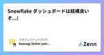

スタフェステックブログのフィード
https://zenn.dev/p/stafes_blog
スターフェスティバル株式会社のエンジニアが運営しています！
フィード

Snowflake ダッシュボードは結構良いぞ...!
スタフェステックブログのフィード
こんにちは！ スターフェスティバルの@koonagiです。最近、Snowflakeのダッシュボードを使い始めました。ユースケースによっては非常に便利だったので、紹介します。 Snowflakeダッシュボードとははじめに、Snowflakeダッシュボードとは、Snowflake上でチャートを使ってクエリ結果を視覚化・共有できる機能となります。2024年7月時点で下記のようなチャートを利用可能です。機能自体はかなりシンプルな作りになっていて、Y軸を固定するなどのあまり細かい調整などはできません。表ラインバー散布図ヒートグリッドスコアカード※イメージ図ワークシート...
15時間前

タブUIをアクセシブルにする
スタフェステックブログのフィード
どうも、nano72mknです。アクセシビリティを意識してタブUIを作ったので、実装時に調べたことやポイントをまとめます。 タブUIについてまず、初めにタブUIと言われて思い浮かべるのは、この形だと思います。このUIは、２つのパーツに分けることができます。１つ目は、「タブ」と呼ばれるパーツ２つ目は、「タブパネル」と呼ばれるパーツこの２つのパーツをがっちゃんこして、タブUIは出来ています。 タブUIをアクセシブルにするroleとaria属性を付与してアクセシビリティ対応をする。 roleを付与する付与する必要があるものは下記の３つtabtablist...
23日前
GitHub Actionsにarm64 runnerが来たので自社サービス環境をarm64に対応させてみた
スタフェステックブログのフィード
お久しぶりです。スターフェスティバル株式会社エンジニアのsoriです。6/3にGitHubからArm64環境のGitHub Actions Runnerが発表されました！https://github.blog/2024-06-03-arm64-on-github-actions-powering-faster-more-efficient-build-systems/まだこのRunnerはPublic betaであり、Team/Enterprise planでしか使えませんが、Silicon Macの普及やAWSでもGravitonインスタンスが使われるようになり、コストにもパフォ...
1ヶ月前
ステークホルダーが沢山いる中でプロダクトをリリースするにあたってチームで気をつけていること
スタフェステックブログのフィード
スターフェスティバル株式会社 の バックエンドエンジニアの @ikkitang です。先日、弊社のプロダクト開発部で Win Sessionが行われました。Win Sessionというのは、以下の記事で紹介されています。https://zenn.dev/stafes_blog/articles/about-win-session要約すると、各チームからは自チームの試行錯誤・取り組みをアウトプットして、また参加者からは全力でそれを褒め称えるという自己肯定感バク上がりの社内イベントです。今回は私(と後もう一人)がチーム代表として発表をしたのですが、その時に発表した内容をブログにも書い...
3ヶ月前
TerraformでSnowflakeタグベースのマスキングを実装する
スタフェステックブログのフィード
こんにちは！ @koonagiです。いきなりですが、Snowflakeのマスキング機能とても便利ですよね個人情報を保護しながら、安全に分析業務を行うことができるので最近弊社でも導入を始めました。導入に当たってTerraformを使ってマスキング機能に必要なリソースを作成してみたので、今回はそのことについて書いていこうと思います。 マスキングポリシーSnowflakeの列レベルのマスキング機能がダイナミックマスキングになります。ダイナミックマスキングをどのオブジェクトに適用するかどうかのポリシーがマスキングポリシーです。マスキングポリシーは、 特定のロールに対して、カラムの...
4ヶ月前
php-fpmのプロセスをコントロールする
スタフェステックブログのフィード
スターフェスティバル株式会社 エンジニアのDPontaroです。昨年のことですが、php-fpm周りのパラメータチューニングを行いパフォーマンス調整を行ったので記事にしてみます。 概要既存WebアプリケーションにNew Relic入れることになった本番導入したらパフォーマンス悪くなり障害発生、切り戻し改めて検証php-fpmとNew Relicのパラメータ調整して無事導入 前提 New Relichttps://newrelic.com/jpNew Relicはアプリケーションパフォーマンス管理(APM)ツールです。Webアプリケーションやサーバーのパフォ...
4ヶ月前
北海道でワーケーションしたら気分が最高になった
スタフェステックブログのフィード
こんにちは、スターフェスティバル株式会社エンジニアのsoriです。!こちらの記事はスターフェスティバル Advent Calendar 2023の23日目の記事です。20日目に続いて本年2件目のドベカレ（アドベントカレンダーの意）となります。趣味の旅行が高じて、気づけば2020年、2022年と度々ワーケーションのことを記事にしてきました。旅行好きが高じて、2023年は飛行機での移動を快適にするためJALのJGCステータス修行をすることになり、無事11月に達成できました🎉最終的に2023年は通算57回も飛行機に乗ることになりました…！（28往復+昨年から飛んだ分の帰り）飛行...
6ヶ月前
バックグラウンドロケーションを使用したアプリ審査対応Tips
スタフェステックブログのフィード
ご無沙汰しております、スターフェスティバル株式会社エンジニアのsoriです。!こちらの記事はスターフェスティバル Advent Calendar 2023の20日目の記事です。アドベントカレンダーの時期以外にもちゃんと記事を上げたいなと思っていましたが、今年も結局年末になってしまいました。今年の後半は、これまで担当していたプロジェクトの開発メンテナンスを行いつつ、新規事業としてのプロダクトの開発をメインで行っていました。先月には、沖縄の美味しいものを食べたいというよこしまな理由でプロポーザルを出したフロントエンドカンファレンス沖縄のLTが通ったので、かなり久々に技術系イベント...
6ヶ月前
文系大卒が情報系大学院へ行き、もっと準備しておくべきだったと感じた数学のお話
スタフェステックブログのフィード
この記事はスターフェスティバル Advent Calendar 2023 の 19 日目の記事です。 当記事の内容概要こちらのエントリ に記した通り、現在わたしはスターフェスティバル株式会社に就業しながら、フルリモートワーク・フルフレックスな環境を活用し、大学院で情報科学を学んでいます。入学後かれこれ半年以上が経過し、「辛うじて入学出来たものの、その後ひぃひぃ 🥺 言わない為に事前知識として身につけておくべき」だったと痛感した数学関連の分野について、それらをどのよう教材でキャッチアップしていったか、についてまとめます。履修する授業や研究内容によっても大きく差があると思いますが、...
6ヶ月前
スプライティング、役目を終えたテクニック
スタフェステックブログのフィード
この記事はスターフェスティバル Advent Calendar 2023の 18 日目の記事です。https://qiita.com/advent-calendar/2023/stafes僕が関わっているプロダクトには「sprite.svg」という大きなsvgファイルがあります。こいつは何だろうと思いつつ、フロントエンドに疎いこともあり特に調べることもせずにしばらく過ごしていましたが、先日 HTTP/3 について調べている中で「スプライティング」というテクニックを知り、ようやくこいつの存在理由を理解することができました。今更ではありますが、せっかくなのでこの記事ではスプライティ...
6ヶ月前
Hygenを使ってアプリケーションコードの雛形を自動生成している話
スタフェステックブログのフィード
こんにちは、@ikkitangです。この記事はスターフェスティバル Advent Calendar 2023の17日目の記事です。昨日はnano72mknさんのdivで作るボタンはボタンぽい何かでした。https://zenn.dev/stafes_blog/articles/nano72mkn-div-button初心者なので、良くやった記憶がありますねぇ・・（白目。nano72mknさんはフロントエンドで困ったらだいたいnano72mknさんに聞けば何か解決するのでは、とめちゃくちゃ皆に頼られてる方ですが、フロントエンドにおいてアクセシビリティや開発のメンテナンス性など色々...
7ヶ月前
divで作られたボタンはボタンぽいだけ。押せない人が出てくるのでやめよう。
スタフェステックブログのフィード
!この記事はスターフェスティバル Advent Calendar 2023の 16 日目の記事です。 はじめにどうも、nano72mkn です。今年の夏から Web アクセシビリティを勉強し始めて、今まで自分が作って来た UI の中にはユーザーによっては使えない/使いにくい物であったと分かり、反省しているところです。その中でも、良く目にするし過去に自分でも作った事がある div で作られたボタンについて自戒の念も込めて書きたいと思います。 div で作られたボタンGitHub でもコード検索したら結構出てくる div で作られたボタンですが、React や Vue な...
7ヶ月前
Good Code, Bad Code ～持続可能な開発のためのソフトウェアエンジニア的思考を輪読会で読んだ話
スタフェステックブログのフィード
この記事は スターフェスティバル スターフェスティバル Advent Calendar 2023の15日目の記事です。スターフェスティバル株式会社 ソフトウェアエンジニアのishidaです。先日社内の輪読会で 「Good Code, Bad Code ～持続可能な開発のためのソフトウェアエンジニア的思考」という本を読みました。 本記事はそのレポートになります 輪読会参加の動機弊社エンジニアの@ikkitangさんが輪読会やるよーと告知があったので、参加させていただきました。個人的な動機としては、開発やコードレビューの視点を広げられるのではと思ったためです。コードを書く際...
7ヶ月前
GapというPackageを理解する
スタフェステックブログのフィード
こんにちは！noseです。この記事はスターフェスティバル Advent Calendar 2023の13日目の記事です。https://qiita.com/advent-calendar/2023/stafes はじめにFlutterには様々なpackageが存在します。今回は今更ながらGapについて理解を深めていこうと思い色々調べてまとめてみました。https://pub.dev/packages/gap 現状の理解度まずGapとはRowやColumnなどに対して自動で適切な方向に指定したマージンを入れてくれるWidgetを提供しているpackageである。というく...
7ヶ月前
非インフラエンジニアがTerraformを恐れなくなるまで
スタフェステックブログのフィード
!この記事は スターフェスティバル Advent Calendar 2023 12 日目の記事です。 はじめにスターフェスティバルの DPontaro です！Terraform触るのこわかったけど、だいぶ薄れてきたので恐れなくなるまでの道のりを紹介します。 TerraformとはTerraform は Infrastructure as Code（IaC）という考え方を実現するためのツールの一つです。IaC はインフラの構築や変更をコードとして管理・適用するアプローチであり、これによりインフラの変更履歴や再現性を確保することができます。AWS、Azure、GCP な...
7ヶ月前
SnowflakeとChatGPTを組み合わせてワークシート上で自然言語からサンプルクエリを生成する
スタフェステックブログのフィード
!この記事は、スターフェスティバル Advent Calendar 2023の10日目です。こんにちは！ @koonagiです。振り返るとインフラやデータ基盤に関連するブログを今年は10本ほど書いてました。ブログに書けてない学んだことが今年は他にもたくさんあった一年だったので、来年はもっとアウトプットしていきたし。さて、自分の今年の締めのブログとして内容としては、今年の自分の技術的な関心が強かったSnowflakeとChatGPTを組み合わせた内容にしようと思います。 できたもの以下のページを参考にして、SnowflakeのUDFを使って、SQLで算出したい内容とテ...
7ヶ月前
PdM見習いを育てるために教えた、たった100つのこと
スタフェステックブログのフィード
どうもこんにちは。スターフェスティバルアドベントカレンダー8日目の担当の @takapyyy です。 この記事を書くに至った背景ごちクルというサービスを提供しているスターフェスティバル株式会社で物流関係プロダクトのプロジェクトリーダーをしています。4月にスタフェスにジョインして8ヶ月ほどたち、入社と同時に教育してきたAPdM(Associate Product Manager)の成長具合がなんかいい感じになってきたので、この8ヶ月間で伝えてきたことを手短に100こほどにまとめてきました。ちなみにAPdMは非エンジニアな社会人8年目の女性ですが、今ではVS Codeでローカル環...
7ヶ月前
monorepoのリポジトリにRelease Drafterを導入して複数のタグを管理する[NestJSプロジェクトを例に]
スタフェステックブログのフィード
!この記事はスターフェスティバルAdvent Calendar 2023の7日目の記事です。 はじめにリリースノートの管理、手動でやると大変ですよね。1日に複数回のリリースを行っている複数のチームで同じリポジトリを触っているといった状況だと、毎回のリリースの変更管理を手でやるのはなかなか骨が折れます。こういった場合、Release DrafterというGitHub Actionを導入することで、リリース間にマージされたPR一覧をもとにリリースノートを生成できます。https://github.com/release-drafter/release-drafter...
7ヶ月前
OpenAI APIのJSON ModeとFunction Callingの精度比較
スタフェステックブログのフィード
!この記事は、スターフェスティバル Advent Calendar 2023の5日目です。こんにちは！ @koonagiです。2023年も変わらずインフラエンジニアとデータ基盤エンジニアを兼務しておりまして、RDSのアップデートしたり、Snowflake使ったデータ基盤作ったり色々楽しくやっておりますー。一年早かったなー。今日はゆるっとこれまで気になってたけど、調査できなかったOpenAI APIの仕様について調査したのでその結果を書いていきます！ やったことシステムにOpenAI APIを組み込むときに、OpenAIのJSON ModeやFunction Calli...
7ヶ月前
なぜ今データエンジニアリングか？第4回 スタフェス Meetup 開催レポ
スタフェステックブログのフィード
こんにちは！スターフェスティバル株式会社でソフトウェアエンジニアをしている吉田あひるです！2023年9月27日(水) に弊社の採用イベントとして「第4回 スタフェス Meetup」をオンラインで開催したので、本記事ではイベントの内容や雰囲気のレポートをさせていただきます！https://stafes.connpass.com/event/293378/過去のイベントレポート第1回, 第2回, 第3回 スタフェス Meetup について弊社はごちクルをはじめ「飲食x物流」の領域でサービスを提供していますが、toB向けということもあり普段ではなかなか利用する機会を持つことがで...
9ヶ月前